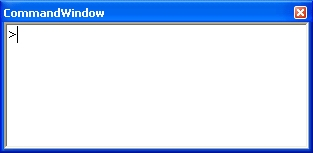
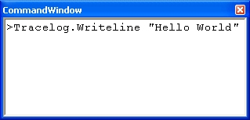
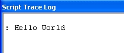

The command window is used to execute single lines of VBScript code. It is a useful way to quickly execute a single statement without having to run an entire test program. When the application is started, the command window is not visible in the IDE. To view the command window, select Command Window from the View menu. By default, it will appear docked in front of the Properties Page.
Each new line in the command window is marked with a ">" prompt. At the prompt, enter a valid VBScript line and hit Enter to execute it. You may use any of the driver objects available to you from the test script to make API calls. However, IntelliSense® is not available in the Command Window.

Example:
Send the string "Hello World" to the Script Trace Log window using the Command Window.
|  | Use the Tracelog object just as you would from the test script. |
|  | "Hello World" appears in the Script Trace Log window. |
See Also
Debugger Overview | Debugger Commands | Watch Window | Locals Watch Window
Astronics Test Systems
Last updated on 3/1/07 by L. Anhalt